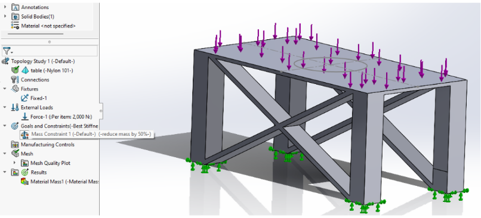
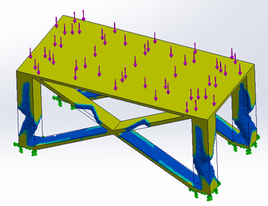
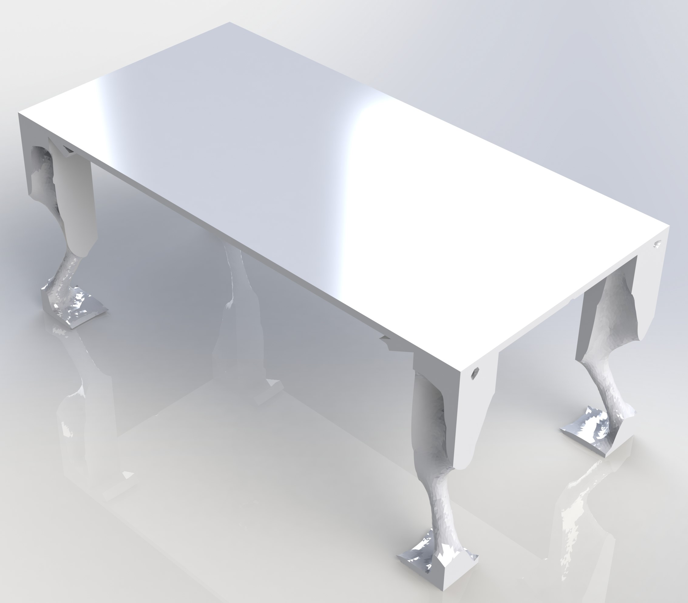
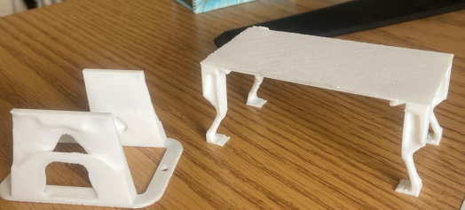

Step 1
Create a CAD of your model, and apply boundary conditions to it. I followed this video on YouTube:


Step 2
This photo shows the resulting shape after Topology optimization. The yellow needs to be kept and the blue is what is left after topology optimization.

Step 3
Rendered version of the table.

Step 4
3D printed version of a table and robotics chassis scaled down after topology optimization. A youtube video of the project is included here: